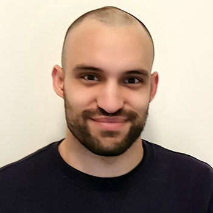

James Spyrou Melbourne, Australia

I am a researcher at The Florey Institute of Neuroscience and Mental Health and The University of Melbourne Faculty of Medicine, Dentistry and Health Sciences, as a part of Professor Christopher Reid's Neurophysiology of Excitable Networks Laboratory. My current work focuses on using the technique of in utero electroporation to model epilepsy-causing brain malformations underpinned by somatic mosaicism. This work has involved collaboration with clinicians and researchers at the Royal Children's Hospital, the Royal Melbourne Hospital, and the Murdoch Children’s Research Institute, and has also included assisting in teaching the theory and practice of this technique at the Australasian Course of Advanced Neuroscience (ACAN). Previously, I completed a Master of Science, awarded with Distinction, at the University of Melbourne, and worked as a research assistant as part of a disease modelling, drug discovery and screening project at The Florey in collaboration with the independent venture catalyst BioCurate. I have presented at and received awards for a number of conferences, including the International Congress of Genetics (ICG), Australian Neuroscience Society (ANS), the Federation of European Neuroscience Societies (FENS) and the International Society for Stem Cell Research (ISSCR), and I am a frequent presenter at local and national epilepsy and neurogenetics meetings.
Contact: jamesspyrou@gmail.com ORCiD: 0000-0002-9302-4962 Google Scholar LinkedIn ResearchGate
Selected Publications Spyrou J., Aung K. P., Vanyai H., Leventer R. J., Maljevic S., Lockhart P. J., Howell K. B., Reid C. A. (2024). Slc35a2 mosaic knockout impacts cortical development, dendritic arborisation, and neuronal firing. Neurobiology of Disease, 201:106657. doi: 10.1016/j.nbd.2024.106657 Pinares-Garcia P.*, Spyrou J.*, McKenzie C. E., Forster I. C., Soh, M. S., Syazwan E. M., Atif M., Reid C. A. (2023). Antidepressant-like activity of a brain penetrant HCN channel blocker in mice. Frontiers in Neuroscience, Sec. Neuropharmacology, 14:1159527. *These authors contributed equally. doi: 10.3389/fphar.2023.1159527 Spyrou J., Gardner D. K., Harvey A. J. (2019). Metabolomic and transcriptional analyses reveal atmospheric oxygen during human induced pluripotent stem cell generation impairs metabolic reprogramming. Stem Cells 37;1042-1056. doi: 10.1002/stem.3029 Spyrou J., Gardner D. K., Harvey A. J. (2019). Metabolism is a key regulator of induced pluripotent stem cell reprogramming. Stem Cells International, 2019:7360121. doi: 10.1155/2019/7360121
Awards and Achievements Recipient of the 2024 Harold Mitchell Foundation Postgraduate Travel Fellowship and the Florey 2023 Anonymous Philanthropic Postgraduate Travel Award. Recipient of a Research Training Program Scholarship (Stipend and Fee Offset), an Elizabeth and Vernon Puzey Scholarship (Supplementary Stipend) and a Rowden White Scholarship, awarded by The University of Melbourne. Recipient of a stipend to attend and present at the Federation of European Neuroscience Societies (FENS) Regional Meeting 2025 in Oslo, Norway, and participate in an Early Career Training Programme (ECTP) supported by the Norwegian Research School in Neuroscience (NRSN) and the Norwegian Artificial Intelligence Research Consortium (NORA). Recipient of travel awards to attend and present at the International Congress of Genetics (ICG) in 2023, and the International Society for Stem Cell Research (ISSCR) Annual Meeting in 2018.
Conference Presentations and Abstracts Federation of European Neuroscience Societies (FENS) Regional Meeting 2025, and the Norwegian Research School in Neuroscience (NRSN) Pre-Meeting (Oslo, Norway) – Oral and Poster Presentations. James Spyrou, Lauren E Bleakley, Hannah Vanyai, Snezana Maljevic, Paul J Lockhart, Katherine B Howell, Christopher A Reid. The HCN channel inhibitor Org 34167 reduces epileptiform activity in an in utero electroporation-based mouse model of TSC/FCD2B. Epilepsy Melbourne Meeting 2025 – Oral and Poster Presentation. James Spyrou, Lauren E Bleakley, Hannah Vanyai, Snezana Maljevic, Paul J Lockhart, Katherine B Howell, Christopher A Reid. The HCN channel inhibitor Org 34167 reduces epileptiform activity in an in utero electroporation-based mouse model of TSC/FCD2B. Epilepsy Melbourne Meeting 2024 – Oral and Poster Presentation. James Spyrou, Khaing Phyu Aung, Hannah Vanyai, Richard J Leventer, Snezana Maljevic, Paul J Lockhart, Katherine B Howell, Christopher A Reid. Slc35a2 mosaic knockout impacts cortical development, dendritic arborisation, and neuronal firing. *Awarded the best ‘data blitz’ talk prize by the convenors of the Meeting and visiting Professor Fernando Cendes. Translational Neurogenetics Mini-Retreat 2024 – Oral Presentation. MOGHE Model: Functional Confirmation that Low Frequency Variants are Significant. Epilepsy Research Retreat 2023 – Oral Presentation and Chapter. James Spyrou, Hannah Vanyai, Snezana Maljevic, Paul Lockhart, Katherine Howell, Christopher Reid. Mechanistic insights gained from a novel mouse model of MOGHE. International Congress of Genetics (ICG) 2023 – Poster Presentation. James Spyrou, Hannah Vanyai, Snezana Maljevic, Paul Lockhart, Katherine Howell, Christopher Reid. Recapitulation of a heterotopic neuron phenotype in a novel mouse model of MOGHE using in utero electroporation and CRISPR/Cas9. *Abstract was awarded free registration by the convenors of the Congress. Epilepsy Melbourne Meeting 2023 – Oral and Poster Presentation. James Spyrou, Hannah Vanyai, Snezana Maljevic, Paul Lockhart, Katherine Howell, Christopher Reid. Recapitulation of a heterotopic neuron phenotype in a novel mouse model of MOGHE using in utero electroporation and CRISPR/Cas9. Translational Neurogenetics Mini-Retreat 2023 – Oral Presentation. Recapitulation of a heterotopic neuron phenotype in a novel mouse model of MOGHE. Australian Neuroscience Society (ANS) Annual Meeting 2022 – Poster Presentation. James Spyrou, Paulo Pinares-Garcia, Chaseley McKenzie, Ian Forster, Ming Shiuan Soh, Erlina Mohamed Syazwan, Mohammed Atif, Christopher Reid. Antidepressant-like activity of a brain penetrant HCN channel blocker in mice. Epilepsy Melbourne Meeting 2022 – Poster Presentation. James Spyrou, Paulo Pinares-Garcia, Chaseley McKenzie, Hannah Vanyai, Michael Hildebrand, Christopher Reid. A Mouse Model of Tuberous Sclerosis Complex (TSC) and Focal Cortical Dysplasia Type II (FCDII) Using In Utero Electroporation. *Awarded the best poster prize by representatives of the Australian Epilepsy Project. International Society for Stem Cell Research (ISSCR) Annual Meeting 2018 – Poster Presentation. James Spyrou, David K Gardner, Alexandra J Harvey. Transcriptomic and metabolic analyses reveal reprogramming conditions impact the human iPSC response to oxygen and identify retention of somatic cell metabolic memory. *Abstract received a travel award supported by the ASSCR and the NSCFA. Stem Cells Australia (SCA) Retreat 2017 – Poster Presentation. James Spyrou, David K Gardner, Alexandra J Harvey. Long-term mitochondrial alterations in hiPSC can be induced by reprogramming at physiological oxygen.